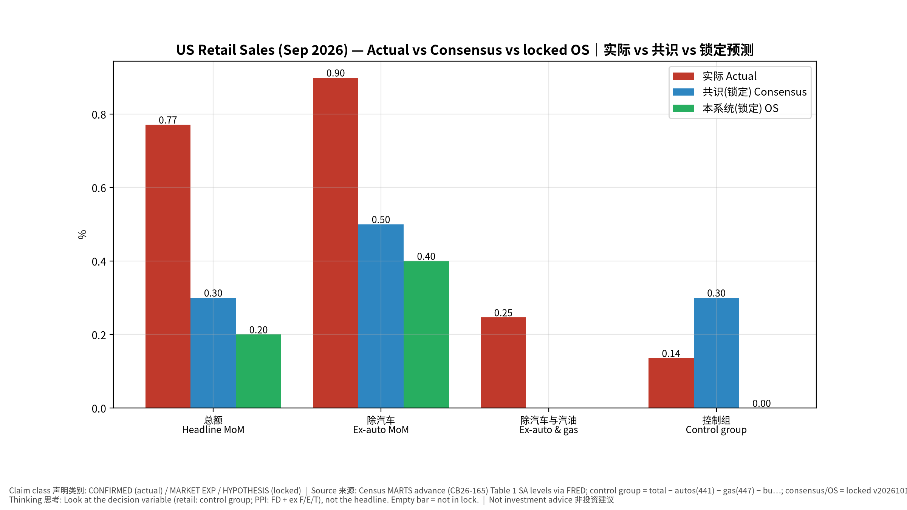
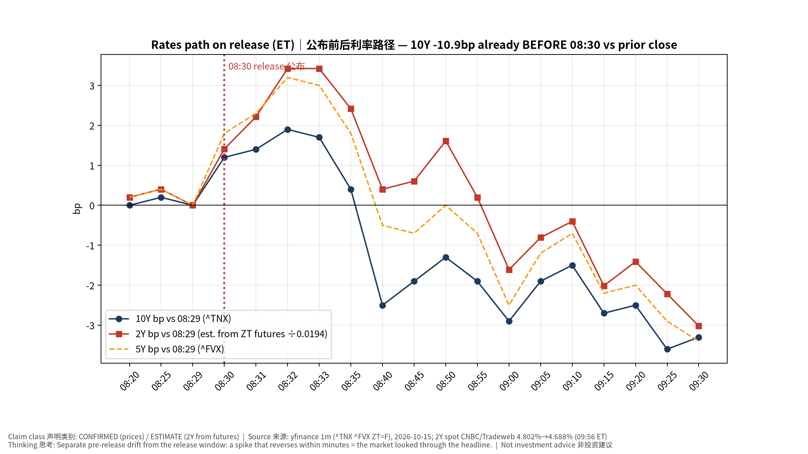
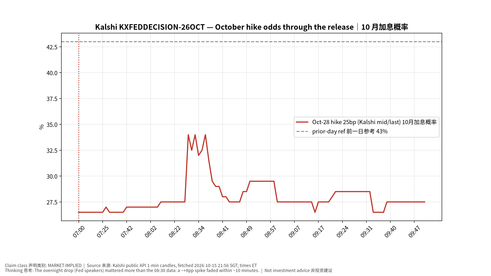
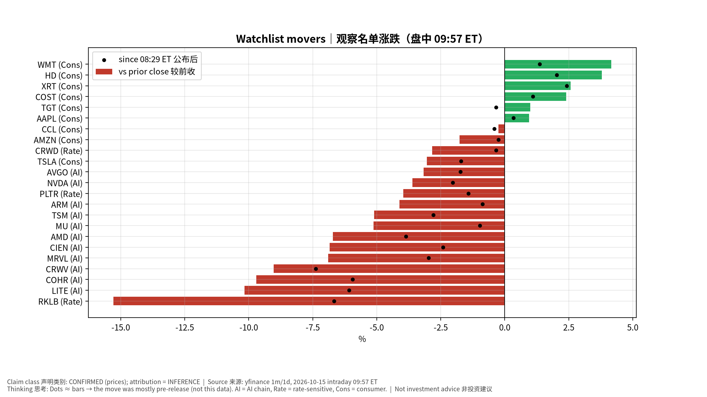
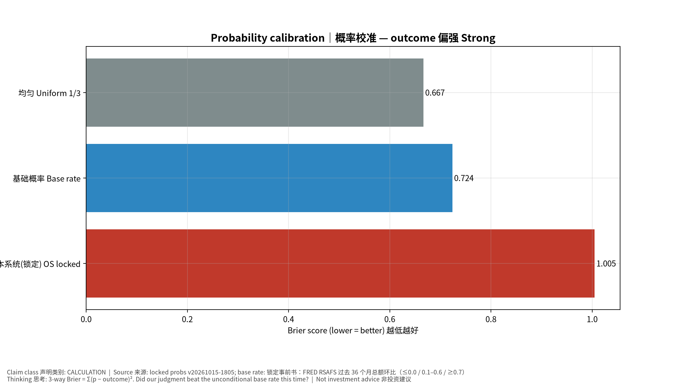
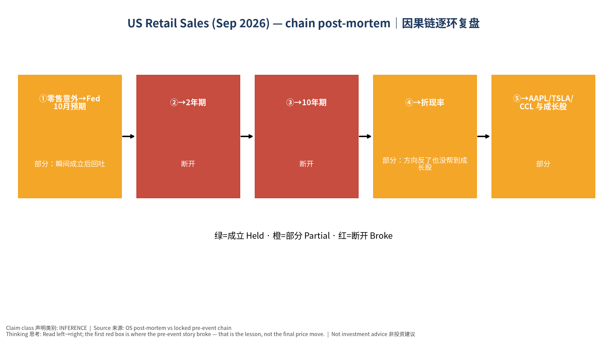

✅ 正式复盘（盘中版：市场数据截至 09:57 ET，收盘后复核）｜事前书（锁定，未改写）：v20261015-1805，快照 2026-10-15T18:05｜发布 2026-10-15 20:30 SGT（2026-10-15 08:30 ET）｜数据：Census MARTS advance (CB26-165) Table 1 SA levels via FRED; control group = total − autos(…｜非投资建议 Not investment advice 标签：FACT 事实｜MARKET EXP 市场预期｜HYPOTHESIS 我们的事前假设｜INFERENCE 推断｜ESTIMATE 估算
⏱ 30秒看懂
🗺 阅读地图
| 你有多少时间 | 读哪里 |
|---|---|
| 2 分钟 | ⏱30秒 + 第 2 节情景对答案 + 图03/08 |
| 10 分钟 | 第 1–3 节 + 第 4 节逐环复盘 |
| 30 分钟 | 全文 + 钢人辩论 + 校准 + 测验 + Excel |
层级说明：L1 故事（人人能懂）→ L2 关键数字（带解释）→ L3 专业细节（网页可折叠，默认收起）。
| 指标 | 实际（OS 计算） | 官方四舍五入 | 共识（锁定） | 本系统（锁定） | 意外 vs 共识 | 我们的误差 |
|---|---|---|---|---|---|---|
| 总额 Headline MoM | +0.77% | +0.8% | 0.3% | 0.2% | +0.47pp | +0.57pp |
| 除汽车 Ex-auto MoM | +0.90% | 0.5% | 0.4% | +0.40pp | +0.50pp | |
| 除汽车与汽油 Ex-auto & gas | +0.25% | — | — | N/A | N/A | |
| 控制组 Control group | +0.14% | 0.3% | 0.0% | -0.16pp | +0.14pp |
官方文本（Census CB26-165）：总额 +0.8%；8 月由 +1.1% 修订为 +1.3%。同比 +6.3%，金额 $745.0 bn。
| 分项 | 本月环比 | 前月环比（修订后） |
|---|---|---|
| 加油站 Gasoline stations | +6.37% | +3.97% |
| 餐饮 Food services | +1.11% | +1.36% |
| 家具 Furniture | +1.30% | +0.20% |
| 电子电器 Electronics | +0.60% | +2.09% |
| 健康个护 Health & personal | +0.73% | +1.21% |
| 无店铺/网购 Nonstore | +0.29% | +2.02% |
| 食品饮料店 Food & bev stores | +0.39% | +0.20% |
| 汽车及零件 Motor vehicles | +0.22% | +0.68% |
| 服装 Clothing | -0.03% | +0.60% |
| 综合商品 General merch. | -0.08% | +0.75% |
| 体育/爱好 Sporting/hobby | -0.53% | +1.01% |
| 建材园艺 Building mat. | -0.56% | +0.20% |
| 杂项零售 Misc. stores | -3.02% | +3.55% |
| 情景 | 锁定概率 | 基础概率 | 结果 |
|---|---|---|---|
| 偏弱 Weak | 25% | 33% | |
| 符合 Inline | 55% | 36% | |
| 偏强 Strong | 20% | 31% | ✔ 实际 |
| 资产 | 前收 | 08:29 ET | 08:31 | 09:15（T+45） | 最新 | 公布瞬间 | 首 45 分钟 | 较前收 |
|---|---|---|---|---|---|---|---|---|
| 10Y 美债 (^TNX) | 5.190% | 5.081% | 5.095% | 5.054% | 5.058% | +1.4bp | -2.7bp | -13.2bp |
| 5Y (^FVX) | 4.992% | 4.890% | 4.913% | 4.868% | 4.865% | +2.3bp | -2.2bp | -12.7bp |
| 2Y（ZT 期货估算 / CNBC 现货） | 4.802% | 4.688%（09:56 ET） | +2.2bp | -2.0bp | -11.4bp | |||
| USD/JPY | 158.32 | 158.01 | 158.07 | 157.84 | 157.56 | +0.04% | -0.11% | -0.48% |
| DXY 美元指数 | 102.55 | 102.13 | 102.21 | 102.07 | 102.06 | +0.08% | -0.05% | -0.48% |
| NQ 纳指期货 | 30,182.75 | 29,833.00 | 29,754.00 | 29,799.50 | 29,755.25 | -0.26% | -0.11% | -1.42% |
| ES 标普期货 | 7,770.25 | 7,751.50 | 7,737.75 | 7,744.00 | 7,732.00 | -0.18% | -0.10% | -0.49% |
| 黄金 Gold | 4,107.90 | 4,176.00 | 4,164.50 | 4,184.10 | 4,178.60 | -0.28% | +0.19% | +1.72% |
| WTI 原油 | 95.09 | 93.84 | 93.68 | 94.47 | 94.46 | -0.17% | +0.67% | -0.66% |
| VIX | 16.87 | 17.48 | 17.69 | 17.49 | 17.47 | +0.21 | +0.01 | +0.60 |
| NDX 纳指100 | 29,950.82 | （09:30 开盘） | 29,445.84 | -1.69% | ||||
| SOX 费城半导体 | 11,684.38 | （09:30 开盘） | 11,195.53 | -4.18% | ||||
| S&P 500 | 7,718.94 | （09:30 开盘） | 7,673.85 | -0.58% |
怎么读：「公布瞬间」= 08:29→08:31 ET；「首 45 分钟」= 08:29→09:15 ET；「较前收」包含公布前隔夜漂移。同一秒还公布了 PPI、初请、费城/纽约联储——窗口内反应是合成的。
| 合约（Kalshi） | 前一日参考价 | 公布前 08:29 ET | 公布后峰值(08:30–09:15) | T+45 09:15 | 最新 |
|---|---|---|---|---|---|
| 10/28 会议 加息 25bp | 43% | 28% | 36% | 28% | 27% |
| 12 月会议 加息 25bp | 81% | 78% | 78% |
| 代码 | 类别 | 盘前(08:29) vs 前收 | 公布后(08:29→最新) | 较前收（盘中 09:57 ET） |
|---|---|---|---|---|
| NVDA | AI | -1.60% | -2.03% | -3.60% |
| MU | AI | -4.20% | -0.97% | -5.13% |
| TSM | AI | -2.38% | -2.78% | -5.10% |
| AVGO | AI | -1.46% | -1.73% | -3.17% |
| ARM | AI | -3.28% | -0.86% | -4.12% |
| AMD | AI | -2.97% | -3.86% | -6.71% |
| MRVL | AI | -4.04% | -2.97% | -6.89% |
| LITE | AI | -4.36% | -6.07% | -10.17% |
| CIEN | AI | -4.53% | -2.41% | -6.84% |
| COHR | AI | -4.00% | -5.94% | -9.70% |
| CRWV | AI | -1.78% | -7.38% | -9.03% |
| PLTR | Rate | -2.58% | -1.42% | -3.96% |
| RKLB | Rate | -9.24% | -6.66% | -15.29% |
| CRWD | Rate | -2.51% | -0.34% | -2.84% |
| AAPL | Cons | +0.61% | +0.34% | +0.95% |
| TSLA | Cons | -1.35% | -1.71% | -3.04% |
| CCL | Cons | +0.15% | -0.40% | -0.25% |
| AMZN | Cons | -1.53% | -0.24% | -1.77% |
| WMT | Cons | +2.77% | +1.36% | +4.17% |
| COST | Cons | +1.28% | +1.10% | +2.40% |
| HD | Cons | +1.72% | +2.03% | +3.79% |
| TGT | Cons | +1.33% | -0.33% | +0.99% |
| XRT | Cons | +0.14% | +2.42% | +2.57% |
⚠ 市场数据为盘中快照（截至 09:57 ET）；收盘后用
--close-check复核。同一秒还公布了 PPI（+1.3%）、初请、费城/纽约联储——零售与 PPI 的影响无法完全拆开（见锁定书图 05 的 2×2 矩阵）。
| 环节 | 成立/断开 | 证据 | 学到什么 |
|---|---|---|---|
| ①零售意外→Fed 10月预期 | 🟠 部分：瞬间成立后回吐 | 总额 +0.8%（共识 0.3%）但控制组 +0.14%（共识 0.3%）；Kalshi 10 月加息 28%→峰值 36%（08:31 ET）→28%（T+45） | 机器先读标题、人后读控制组；十分钟内回吐=市场判定「假强」 |
| ②→2年期 | ❌ 断开 | 2Y（ZT 期货估算）公布瞬间 +2.2bp，首 45 分钟 -2.0bp；全日 -11.4bp（CNBC/Tradeweb 4.802%→4.688%） | 「偏强→2Y ≥+4bp」没出现；证伪条件 #2 字面触发 |
| ③→10年期 | ❌ 断开 | 10Y 瞬间 +1.4bp，首 45 分钟 -2.7bp；全日 -13.2bp 中 -10.9bp 发生在 08:30 之前 | 当天长端由「AI 信用避险 + Fed 官员偏耐心 + 油价回落」主导 |
| ④→折现率 | 🟠 部分：方向反了也没帮到成长股 | 利率下降，但 NDX -1.69%、SOX -4.18% | 折现率不是当天的约束；风险溢价/信用利差才是 |
| ⑤→AAPL/TSLA/CCL 与成长股 | 🟠 部分 | AAPL +0.95%、CCL -0.25%、TSLA -3.04%；WMT +4.17%、COST +2.40%、HD +3.79%、XRT +2.57% | 「名义营业额强 + 利率降」利好零售商；TSLA 受成长股抛售拖累 |
| # | 锁定证伪条件 | 实际 | 判定 |
|---|---|---|---|
| 1 | 控制组 ≥+0.5% 且网购未回吐 → 「Prime Day 回吐」错 | 控制组 +0.14%；网购 +0.29%（8 月 +2.0%） | 未触发。但网购没有转负，只是大幅放缓 → 「回吐」假设只对一半：方向对，机制错（是汽油挤出，不是网购回吐） |
| 2 | 偏强但 2Y 升幅 <2bp → 市场只认 PPI/Fed | 2Y 瞬间 +2.2bp，45 分钟 -2.0bp | 触发（字面）。但这正是锁定书写下的「假强」子情景：「总额 ≥0.7% 但控制组 ≤0.1% … 债市可能先涨后回」——子情景命中 |
| 3 | 偏弱但 AAPL/TSLA/CCL 上涨 | 不是偏弱 | N/A |
| 4 | 总额强、控制组弱，但盈亏平衡通胀大涨 | 10Y 盈亏平衡（FRED T10YIE）为日频，次日才更新 | PENDING（收盘版复核） |
| 5 | 8 月上修 ≥0.3pp | +0.2pp（1.1→1.3） | 未触发 |
我们的观点（事后）：消费被汽油挤压，实际商品消费持平，不构成「需求过热」，不足以单独推动 10 月加息。
对立观点最强版本： 1. 名义 +0.8%、同比 +6.3%，8 月上修到 +1.3%——三个月看消费仍很强，名义 GDP 高增长本身就是通胀燃料。 2. 餐饮 +1.11%：服务消费强，而服务通胀是 Fed 最怕的部分。 3. 纽约联储制造业 +25.5（共识约 10.3）、初请 19.9 万（仍低于 20 万）——劳动与生产都不弱。
| 证据 | 支持我们 | 支持对立 | 权重 |
|---|---|---|---|
| 控制组 +0.14%，剔汽车汽油 +0.25% | ✔ | 高 | |
| 加油站 +6.37%（价格驱动） | ✔ | 高 | |
| 8 月上修 +0.2pp、同比 6.3% | ✔ | 中 | |
| 餐饮 +1.11% | ✔ | 中 | |
| 费城联储新订单骤降至 4.3（前值 29.2） | ✔ | 中 | |
| 纽约联储 +25.5、初请 199k | ✔ | 低（区域/周度噪声大） | |
| Kalshi 跳升后 10 分钟回吐 | ✔ | 高（市场的「投票」） |
裁判：证据偏向我们——但「名义强」意味着企业营收与通胀动能仍在，对立观点在通胀而非需求层面成立。
| 事件 | 结果 | 我们（锁定） | 基础概率 | 均匀 1/3 |
|---|---|---|---|---|
| 9 月 CPI（10/14） | 偏热 Hot | 0.875 | 0.349 | 0.667 |
| 9 月零售（10/15） | 偏强 Strong（规则桶） | 1.005 | 0.724 | 0.667 |
| 9 月 PPI（10/15） | 偏热 Hot | 0.875 | 1.261 | 0.667 |
| 合计（越低越好） | 2.755 | 2.334 | 2.000 |
| 时间 | 事件 | 看什么 |
|---|---|---|
| 10/16 04:00 | 美股收盘 | 收盘复核：消费股涨幅是否保持、10Y 是否守住 5.05% 下方 |
| 10/16 11:30 | Warsh × IMF Georgieva（锁定书 fed-warsh-2026-10-15） | 是否把「汽油冲击 + 消费挤出」定性为可看穿 |
| 10/16 20:30 / 21:15 | 进口价格 / 工业产出 | 油价推动 vs 非油；制造业是否跟随费城联储走弱 |
| 11/17 21:30 | 10 月零售销售（Census 日程） | 控制组能否回到 +0.3% 以上；汽油价格回落后名义总额是否「露底」 |
| 10/29 02:00 | FOMC 决议 | 10 月加息（Kalshi 目前 27%） |
阈值：Kalshi 10 月加息重回 >40% = 市场重新认定需求过热；控制组连续两月 ≤0.1% = 消费真正降温。
✅ 自我测验 Check your understanding
答案：因为强在加油站（价格），控制组只有 +0.1%；加上同秒的 PPI 是能源冲击，市场读成「通胀是供给冲击、需求在被挤压」→ 不必加息更多。另外大部分降幅在 08:30 前已经发生（避险）。
答案：控制组方向和幅度都接近（0.0 vs 0.14），总额大错（0.2 vs 0.8）。错因：没把汽油 +9% 的价格效应放进总额点预测。
答案：「偏强」桶用总额 OR 控制组定义，结果被我们自己预警过的「假强」触发。若用决策变量（控制组）定义，结果落在我们给 55% 的「符合」，Brier 从 1.005 降到约 0.31。
提示：总额会被「反向虚低」；控制组反而可能因为购买力释放而回升——别被标题吓到。
| 打分对象 | Brier（越低越好） |
|---|---|
| 本系统锁定概率 25%/55%/20% | 1.005 |
| 基础概率 33%/36%/31% | 0.724 |
| 均匀 1/3 | 0.667 |
基础概率来源：锁定事前书：FRED RSAFS 过去 36 个月总额环比（≤0.0 / 0.1–0.6 / ≥0.7）。Excel「Calibration」页为实时公式，可改概率自己练。
| 数据 | 来源 | 类别 | 时间 |
|---|---|---|---|
| 实际值 | Census MARTS advance (CB26-165) Table 1 SA levels via FRED; control group = total − autos(441) − gas(447) − building(444) − food services(722), OS-calculated | 官方 / OS 计算 | 2026-10-15 20:30 SGT |
| 共识（锁定） | investingLive via Admiral 2026-10-14; Action Economics survey median 2026-10-13 | MARKET EXP（锁定于 2026-10-15T18:05） | v20261015-1805 |
| 备选共识（未锁定，仅对照） | Dow Jones via CNBC 10/15: 零售总额 +0.4% | MARKET EXP（第二来源） | CNBC 2026-10-15 08:32 ET |
| 利率路径 | yfinance 1m ^TNX ^FVX ZT=F（2Y 由期货估算：ΔP÷0.0194） | DATA / ESTIMATE | 2026-10-15 ET |
| 2Y/10Y 现货 | CNBC quote webservice（Tradeweb） | DATA | 09:56 ET |
| Kalshi | api.elections.kalshi.com 公共 API：KXFEDDECISION-26OCT/26DEC 1 分钟K线 | MARKET-IMPLIED | 2026-10-15 21:56 SGT |
| 个股/指数/外汇 | yfinance 1m prepost + 1d | DATA | 09:57 ET |
| 基础概率 | 锁定事前书：FRED RSAFS 过去 36 个月总额环比（≤0.0 / 0.1–0.6 / ≥0.7） | CALC | 本次运行 |
| 背景新闻 | CNBC（PPI/零售、美债、美元 10/15）、Reuters/Investing.com（科技股抛售、TSMC 业绩）、WSJ（美债三周低点） | NEWS（二手） | 2026-10-15 |
| 同日数据 | DOL 初请（AP/investingLive）、Philly Fed MBOS（官网）、Empire（investingLive） | FACT / NEWS | 2026-10-15 08:30 ET |
| # | 假设 | 类型 | 检验/失效条件 |
|---|---|---|---|
| 1 | 事前锁定共识可作为意外基准（不事后换成更有利的 Dow Jones 共识） | RULE | 两套共识方向一致才下结论 |
| 2 | 08:29→09:15 ET 的变化≈数据本身的影响（同秒多份数据，无法完全拆开） | ASSUMPTION | 若同窗口有 Fed 讲话/大新闻则失效 |
| 3 | 2Y 由 ZT 期货价格变动 ÷0.0194/bp 估算 | ESTIMATE | 与 CNBC 现货差 >3bp 时以现货为准 |
| 4 | Kalshi 中间价≈市场概率 | ASSUMPTION | 价差 >5c 或成交稀薄时不可靠 |
| 5 | 基础概率代表「无信息」先验 | ASSUMPTION | 体制切换（能源冲击/战争）时需用条件基础概率 |
| 6 | 控制组 = 总额 − 汽车 − 加油站 − 建材 − 餐饮（Census 不直接公布） | CALC | 与 BEA/媒体口径差 >0.1pp 时注明 |
Builder
pipeline/build_post_macro.py --event us-retail-2026-09（通用宏观事后书，CPI
仍用 build_post_event.py）；叙述层
--extra data/post_event/us-retail-2026-09_post_extra_20261015.md（数字以
{{占位符}} 从本次快照自动填入）；快照
data/post_event/us-retail-2026-09_*_20261015-2156.json；版本
v20261015-2156-post；事前锁定 v20261015-1805 完整性已校验。Excel
含活公式（意外、情景判定、Brier、利率窗口、观察名单）。

📊 怎么看这张图
📊 怎么看这张图

📊 怎么看这张图

📊 怎么看这张图

📊 怎么看这张图

📊 怎么看这张图

📊 怎么看这张图

📊 怎么看这张图
| 术语 | English | 白话 | 比喻 |
|---|---|---|---|
| 零售销售 | Retail sales | 美国人在商店、网上、餐厅花的钱（名义，未扣价格） | 像门店的「营业额」，不是「销量」 |
| 控制组 | Control group | 剔除汽车、加油站、建材、餐饮后的零售，直接进 GDP 计算 | 像剔除一次性项目后的「核心营收」 |
| 名义 vs 实际 | nominal vs real | 名义=金额；实际=扣掉涨价后的数量 | 油价涨 6% 时加油站营业额涨 6%，但加的油没变多 |
| 假强 | fake strength | 总额强但只因价格上涨 | 收入增长全靠提价、销量没动 |
| 2年期美债收益率 | 2-year Treasury yield, 2Y | 市场对未来两年 Fed 利率路径的投票 | 两年期资金成本报价 |
| 基点 | basis point, bp | 0.01 个百分点 | 利率 5.19%→5.05% = −14bp |
| Brier 分数 | Brier score | 概率预测打分：Σ(概率−结果)²，越低越好 | 天气预报准确度评分 |
| 基础概率 | base rate | 历史上同类结果出现的频率 | 先看「平均每年几次」，再看今年特殊情况 |